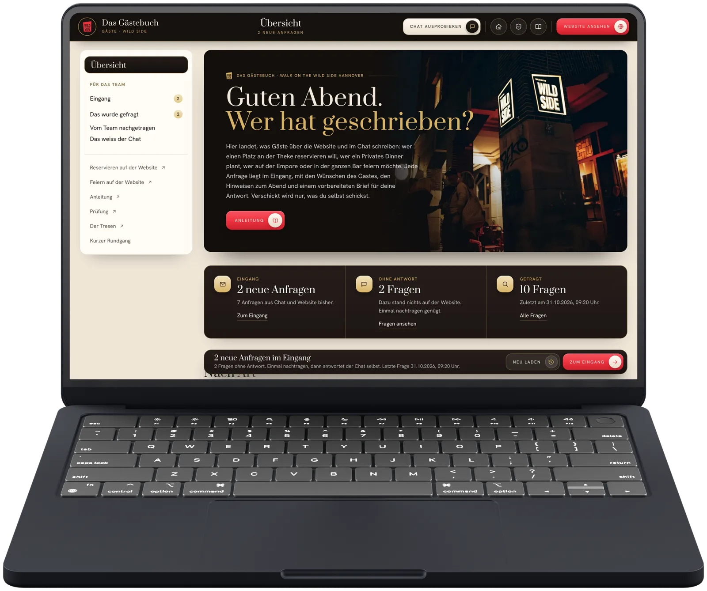

Der Chat für eure Gäste
Das Gästebuch
- Was sie tut
- Beantwortet Fragen von Gästen zu Zeiten, Plätzen, Feiern und DJ-Abenden, nur aus euren Seiten und Karten. Im Entwurf steht er im Werkzeug für die Gäste zum Ausprobieren.
- Was zum Anbieter geht
- Fragen und Antworten des Gesprächs. Name und Kontakt nur, wenn ein Gast selbst etwas anfragt.
- Was gespeichert wird
- Fragen und Antworten im Werkzeug für die Gäste, damit ihr seht, was Gäste wissen wollen; nach zwölf Monaten gelöscht.
Ohne KI
Die Seiten Besuch und Feiern, die Fragen und Antworten und das Reservieren stehen wie gewohnt da.